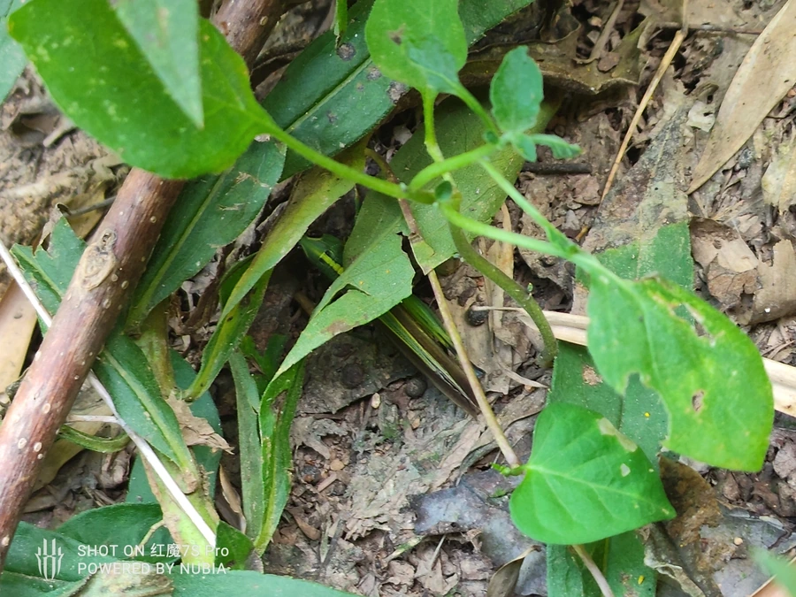

昆虫 · 动物界
黄脊竹蝗 Ceracris kiangsu

体背中央有一条鲜明黄线的蝗虫，群集啃食竹叶，大发生时竹叶被吃光，竹林如遭火烧，是竹子的大害虫。
- 分类
- 门节肢动物门纲昆虫纲目直翅目科蝗科属竹蝗属
- 栖息环境
- 毛竹等竹林，以及竹山中的灌丛和草地
- 地理分布
- 中国长江以南各竹产区，以湖南、江西、福建等地较多
- 保护级别
- 暂无评估
物种志
黄脊竹蝗成虫体长 30–40 mm，体呈黄绿至黄褐色，最醒目的特征是前胸背板中央有一条纵贯的黄色脊线，因此得名。前翅狭长，膜质，后足股节粗壮，善于跳跃；触角细长，末端略膨大。
黄脊竹蝗分布于中国长江以南的竹产区，是毛竹等竹种的重要害虫。它一年发生 1 代，以卵在竹山松土中越冬，翌年 5 月前后孵化，若虫群集取食竹叶，3 龄后开始成群迁移。大发生时，成片的竹子叶片被啃食一空，只剩光秃的竹枝，远看像被火烧过一样，竹林因此减产，竹材质量下降。竹蝗还有嗜好咸味的习性，会聚集在尿液和汗渍处取食。防治上可在若虫期人工挖卵、喷洒药剂，并保护鸟类和寄生蜂等天敌。
形态与习性
- 食性主要取食毛竹等竹类的叶片
- 体长30–40 mm
- 特征前胸背板中央有一条鲜明的黄色脊线
- 世代一年 1 代，以卵在竹山松土中越冬
- 危害竹叶被啃光，竹林如遭火烧，竹材减产
- 习性嗜好咸味，常聚集在尿液和汗渍处
趣味知识
- 黄脊竹蝗大发生时能把整片竹林的叶子吃光，远看像被火烧过。
- 它有嗜好咸味的怪癖，常聚在人畜尿液和汗渍处取食。
- 竹蝗的卵产在竹山的松土里，挖卵是冬季防治的重要办法。